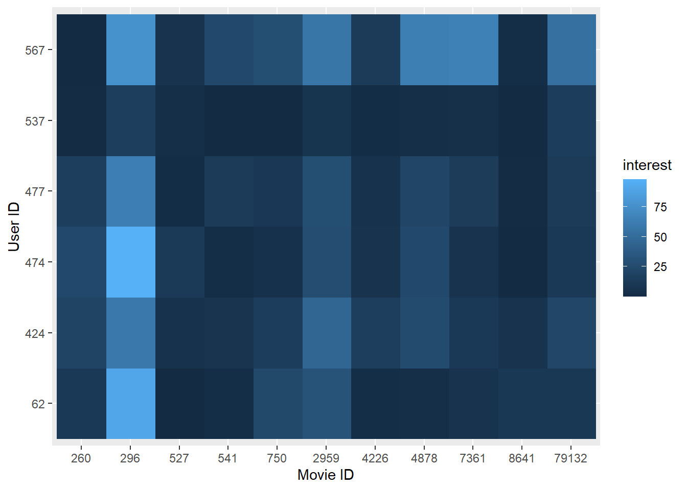

Previously, we have implemented several algorithms for recommendation, such as adaptive bootstraping, user-similarity-based recommendation, and latent-factor-based recommendation. The next one we would like to introduce is the tag-based recommendation algorithm. Before introducing it, we need a new dataset to carry on the thought. The “tag.csv” in the Movielens contains the data we are looking for. The dataset includes user id, movie id, tag and timestamp (which represents the timepoint that the rating was generated at). Based on the data of tags, we can employ a strategy to achieve personalized recommendation for a user:
For every user, find the most commonly used tags
For each movie, find the movie has been labeled by which tag for the most times.
For the given user, find his most commonly used tags, recommend to the user the movie who has been labeled by this tag for the most times.
To improve the above strategy and utilizing all tags rather than most used/received tags, we can quantitatively measure a user’s interest to a movie based on all tags given by the user and all tags received by the movie. The formula of the user u’s interest to the movie i is as follows:
\(p(u, i)=\sum_{b} \frac{n_{u, b}}{\log \left(1+n_{b}^{(u)}\right)} \frac{n_{b, i}}{\log \left(1+n_{i}^{(u)}\right)}\)
where \(n_{u, b}\) is the number of times that user u has labeled tag b, \(n_{b, i}\) is the number of times that movie i has been labeled tag b, \(n_b^{(u)}\) records how many different users have used tag b, \(n_i^{(u)}\)records how many different users have tagged the movie i. To get the specific value, we should build our function first.
The difficulty of the function is to find the correct sets of tags or users. To acheive the goal, we manipulated this dataset, counted the corresponding numbers we need during each round. Then, we sum all values we got in each round and get the interest value of the user on specific movie.
# Set up interest function
fc.interest = function(u, i) {
B.u =
remove.tag %>%
filter(user_id == u)
B.u.distinct =
B.u %>%
distinct(tag)
remove.tag.distinct =
remove.tag %>%
select(-movie_id, -timestamp) %>%
distinct()
B.i =
remove.tag %>%
filter(movie_id == i)
B.i.distinct =
B.i %>%
select(-tag, -timestamp) %>%
distinct()
n_ub = c()
n_bi = c()
n_bu = c()
lg.value = c()
n_iu = nrow(B.i.distinct)
value = c()
for (b in 1:nrow(B.u.distinct)) {
n_ub[b] = sum(B.u$tag == as.character(B.u.distinct[b, 1]))
n_bi[b] = sum(B.i$tag == as.character(B.u.distinct[b, 1]))
n_bu[b] = sum(remove.tag.distinct$tag == as.character(B.u.distinct[b, 1]))
lg.value[b] = log(1 + n_bu[b]) * log(1 + n_iu)
value[b] = n_ub[b] * n_bi[b] / lg.value[b]
}
return(interest = round(sum(value), 2))
}
After building the function, we want to select the most popular movies to see how this function works. That is, we want to visualize the interest value. However, the dataset only contains about 3700 tags. The limited tag amount will destroy the credibility of the tag-based recommendation system, as some users may have given only a few tags and some movies may have only received a few tags. Therefore, we only included several movies that received most tags and several active users. The cut-off is, we select users who have labeled more than 20 movies and movies that has been labeled by at least 4 users. The selected movies is shown below.
popular.movie =
remove.tag %>%
select(-tag, -timestamp) %>%
distinct() %>%
group_by(movie_id) %>%
summarize(
count = n()
) %>%
filter(count > 3) %>%
mutate(
"movie id" = movie_id
) %>%
select(-movie_id) %>%
select("movie id", count) %>%
arrange(desc(count))
active.user =
remove.tag %>%
select(-tag, -timestamp) %>%
distinct() %>%
group_by(user_id) %>%
summarize(
count = n()
) %>%
filter(count > 20) %>%
arrange(desc(count))
active.user.vec = as.vector(active.user$user_id)
popular.movie.vec = as.vector(popular.movie$`movie id`)
movie.name =
movies %>%
janitor::clean_names() %>%
filter(movie_id %in% popular.movie.vec) %>%
knitr::kable() %>%
kable_styling(bootstrap_options = c("striped")) %>%
kableExtra::kable_styling(font_size = 12)
movie.name| movie_id | title | genres |
|---|---|---|
| 260 | Star Wars: Episode IV - A New Hope (1977) | Action|Adventure|Sci-Fi |
| 296 | Pulp Fiction (1994) | Comedy|Crime|Drama|Thriller |
| 527 | Schindler’s List (1993) | Drama|War |
| 541 | Blade Runner (1982) | Action|Sci-Fi|Thriller |
| 750 | Dr. Strangelove or: How I Learned to Stop Worrying and Love the Bomb (1964) | Comedy|War |
| 2959 | Fight Club (1999) | Action|Crime|Drama|Thriller |
| 4226 | Memento (2000) | Mystery|Thriller |
| 4878 | Donnie Darko (2001) | Drama|Mystery|Sci-Fi|Thriller |
| 7361 | Eternal Sunshine of the Spotless Mind (2004) | Drama|Romance|Sci-Fi |
| 8641 | Anchorman: The Legend of Ron Burgundy (2004) | Comedy |
| 79132 | Inception (2010) | Action|Crime|Drama|Mystery|Sci-Fi|Thriller|IMAX |
We created a heat map to visualize the users’ interest values, which is shown below. The horizontal coordinate of the heat map is the movie ID and the vertical coordinate is the user ID, color in each grid represents the value of the user’s interest to the movie.
# construct a new table of the selected id and movie
heat.map = tibble(user_id = rep(active.user.vec, length(popular.movie.vec)), movie_id = rep(popular.movie.vec, length(active.user.vec)))
# add insterest value to the table
interest = c()
for (i in 1:nrow(heat.map)) {
interest[i] = fc.interest(as.numeric(heat.map[i, 1]), as.numeric(heat.map[i, 2]))
}
heat.map = add_column(heat.map, interest)
# build heat map
heat.map %>%
ggplot(aes(y = as.factor(user_id), x = as.factor(movie_id), fill = interest)) +
geom_tile() +
geom_raster() +
labs(
x = "Movie ID",
y = "User ID"
)
Tag based TF-IDF can help us predict the user’s interest on a certain movie (or item). The algorithm’s validity relies on a large dataset. That is, when enlarging the dataset, the system will become more and more accurate. In this way, the system works well for big websites due to their large user groups.
The algorithm above have punishment for popular tags and popular movies, and doesn’t reduce the accuracy of the recommendation results while enhancing the personalization of the recommendation results.